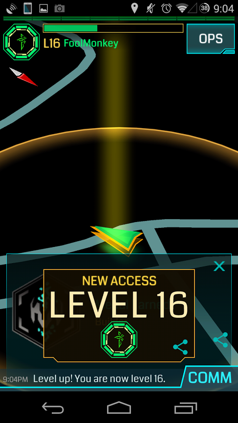
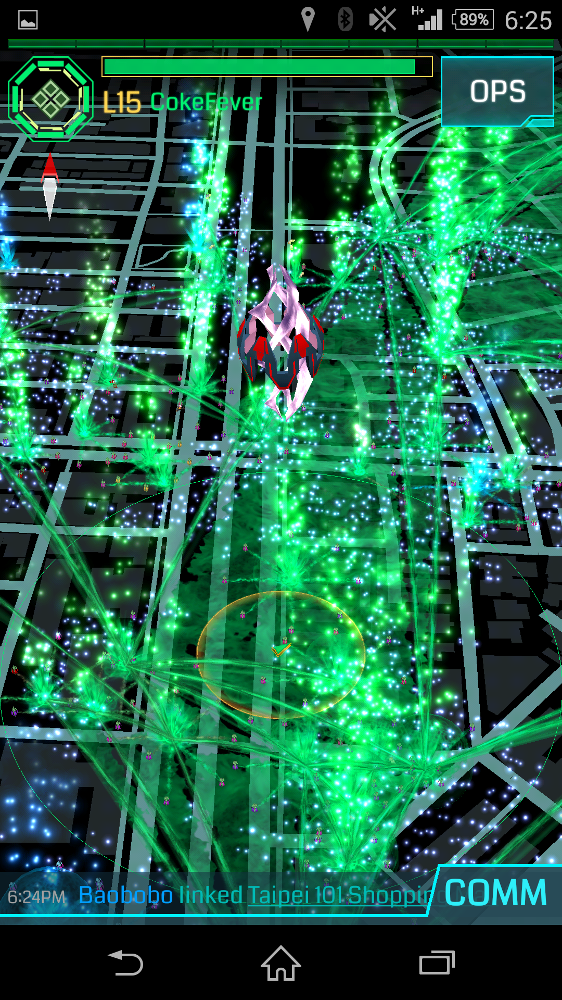
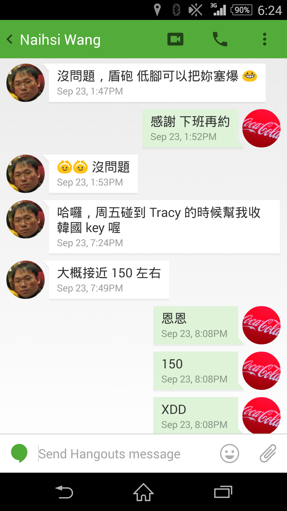

歡迎加入Ingress台灣綠軍
Ingress是由Google旗下Niantic Labs所開發的一款擴增實境真人線上即時互動遊戲, 自2012/11/16於Android上開始風靡, 並在2014/7/14於iOS上發行. 是一款在手持設備上, 透過網際網路及衛星定位, 並必須實際到現場進行的全新概念遊戲. 這世界非你所想像! 一起加入Enlightened的行列, 開始跟世界各地的夥伴一起並肩作戰...
若您尚未下載遊戲, 可立即安裝. 希望透過簡短的介紹及導覽, 能加速您對遊戲的了解. 並透過新人註冊, 來加入這個大家庭!
-
選擇對的陣營
當您選定了遊戲名稱(Codename)之後, 您必須選擇一個陣營. 綠軍(Enlightened)為了人類的進化而戰, 並相信進步與改革才是未來. 衷心邀請您加入我們這個大家庭.
活動紀實:
+ 2014/10/26 全台設姬腰 (世界紀錄)
+ 2014/10/10 自己的台灣自己蓋 (國慶活動)
+ 2014/9/30 猴塞雷 (台灣首位封頂玩家)
還有超多, 等著您一起參與... -
遊戲的基本操作
完成簡單的系統教學之後, 離開椅子, 出去走走吧! 帶著您的手機, 出去探索這個未知的世界.
簡易教學:
+ 台灣綠軍新人手冊 (30秒上手懶人包)
+ 台灣綠軍新人手冊 (完整教學)
+ Hangouts使用教學
完成右上角新人註冊後, 會有友軍就近協助您喔... -
遊戲的真正意義
您可以選擇與人互動, 結交新朋友. 友軍也許就近在咫尺, 歡迎加入友善的綠軍社群, 我們在各地都有熱心的人願意提供協助.
相關連結:
+ Google社群: Enlightened Taiwan
+ 部落格: Enlightened Taiwan 資訊交流站
期待您的加入...